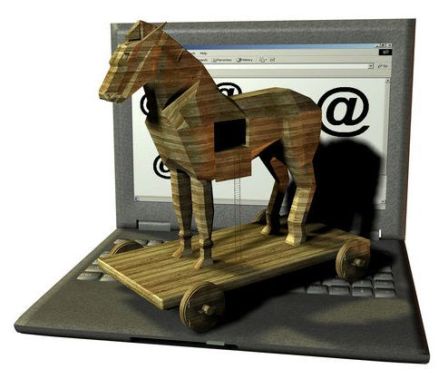
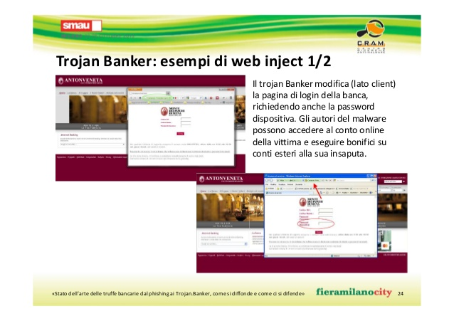
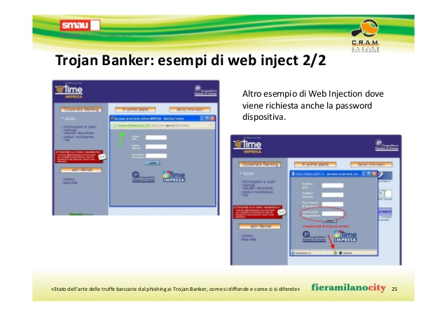

Trojans :
I trojans (detti anche cavalli di Troia) sono un altro tipo di malware che svolge delle funzioni diverse rispetto ai tipi descritti precedentemente. Sono subdoli e molto insidiosi: il loro nome deriva infatti dal trucco usato dagli Achei per conquistare la città di Troia (il famoso cavallo di legno).
Un trojan è solitamente un normalissimo programma, che fa credere all'utente di compiere funzioni utili. Una volta lanciato, il programma può effettivamente svolgere quelle funzioni oppure no; il punto centrale però è che esso svolge un'azione secondaria, che l'utente sicuramente non approverebbe: questa azione spesso
consiste nell'installazione nel computer vittima di una backdoor, oppure nel reperire, manomettere o modificare i dati o le informazioni contenuti nell'hard disk, nonché di danneggiarli. A causa della diffusione dei programmi peer-to-peer (tipo Emule, Torrent, ecc.), il pericolo di venire infettati da un trojan è notevolmente aumentato, in quanto il download di file eseguibili da queste fonti spesso non sicure è un'operazione molto a rischio. Come i worms, inoltre, anche i trojans usano come altro veicolo di diffusione gli allegati di posta elettronica, usando lo stesso loro metodo. Non sempre però il messaggio e-mail può provenire da un mittente sconosciuto: qualche persona che ha il vostro indirizzo e-mail, interessata a "mettere in naso" o a compiere altre operazioni
dannose ed a vostra insaputa nel vostro computer, potrebbe infatti spedirvi un trojan, magari specificando che il programma in allegato è un'utilità di sistema o comunque un programma benigno, invitandovi a provarlo.
Esempi di trojan:

